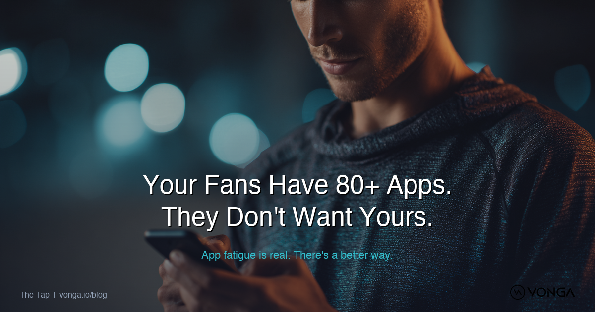
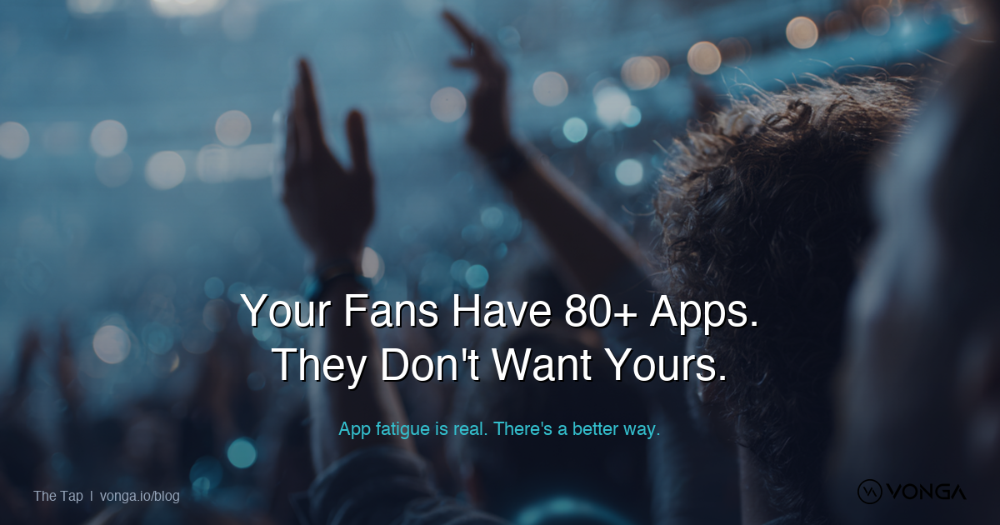
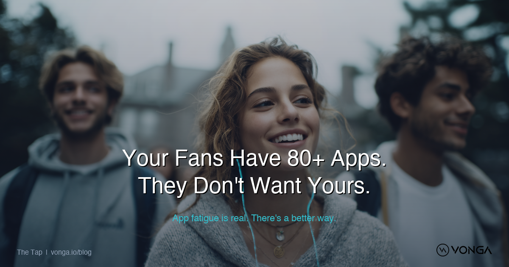

Using your uploaded photos with branded overlay
Cinematic close-up of someone tapping their phone. Teal/amber lighting. Most directly relevant to the blog topic.
Wide-angle stadium shot. Sets the sports context. Big, cinematic feel.
Diverse students in casual gear. Human, relatable, warm. Connects the "fan" in "fan engagement."
